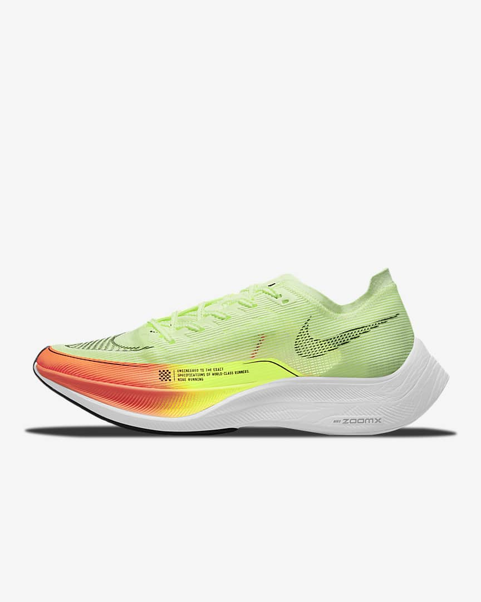

Road Racing Shoe
Nike Zoom X Vaporfly Next% 2
€249,99
Sustainable Materials
Select Size
Select Guide
Buy now , pay later with Klarna
Push to the finish with the next step in our sustainability journey.We made the ultralight Nike Air Zoom Alphafly Next Nature with at least 50% recycled content by weight, using recycled materials that won't sacrifice performance.It's still made to help you unlock new personal records, with a secure, breathable design that is so light, it'll feel like flying.You've trained hard, time to lace up and break through wearing a shoe born from waste.